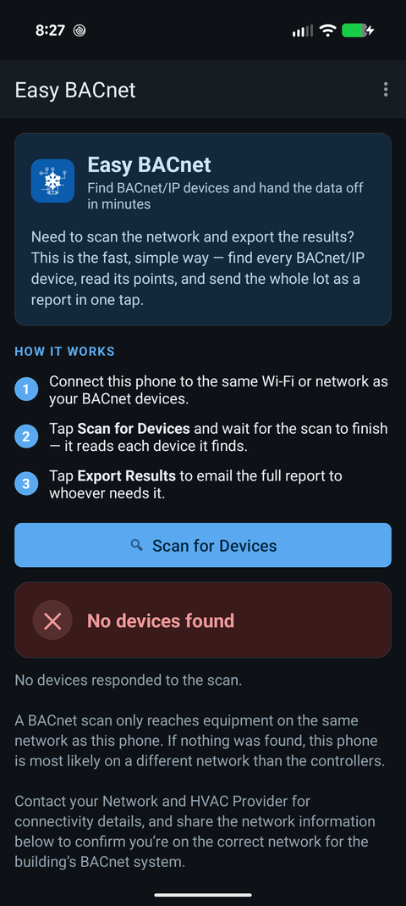

Why am I on the wrong network even though I'm plugged into the switch?
Updated 21 September 2026
Plugging a cable into a switch only gives you a physical connection. Which network you actually land on — the subnet — is decided by how that switch port is configured, by the address a DHCP server hands you, or by the static address set on your own device. A single switch commonly carries several separate networks at once, so it can easily place you on the office or guest network instead of the controls network. BACnet IP discovery only reaches your own subnet, so when you are on the wrong one the scan finds nothing even though the cable is plugged in and the link light is on.

What a subnet is, in plain terms
Think of the building's wiring as a set of separate mail systems that happen to share the same hallways. Each system — the office computers, the guest Wi-Fi, the heating/cooling/ventilation controls — is its own subnet: a group of devices that can talk to each other directly. A message sent within one subnet does not automatically reach another; getting between them requires a router (or, for BACnet broadcasts specifically, a BBMD).
You can tell subnets apart by their address range. An address like
10.20.30.42 with a mask of 255.255.255.0 means "I am on
the 10.20.30 network." A device at 192.168.1.55 is on a different
network and, without a router between them, the two cannot hear each other.
Why "plugged into the switch" isn't enough
On anything bigger than a home network, switches are managed: one physical switch is divided into several logical networks (VLANs), and each port is assigned to one of them. The controls, the offices, the cameras and the guest Wi-Fi can all run through the same switch on different VLANs. So the port you happened to plug into decides which network you are on — and it is often not the controls network. A link light confirms the cable works. It says nothing about which subnet you were placed on.
The four common reasons the switch gives you the wrong subnet
1. The port is on a different VLAN
The most common one. The jack you used is assigned to the office or guest VLAN, not the controls VLAN. Everything looks connected, but you are walled off from the controllers. The fix is a port (or a switch configuration change) on the controls VLAN — a network task, not something an app can do.
2. DHCP handed you an address from the wrong pool
If that VLAN has its own DHCP server, it gives you an address on its subnet — a perfectly valid address on the wrong network.
3. No DHCP answered, so your device made up an address
Controls networks often have no DHCP server at all — every controller is
set by hand. Plug a laptop or phone expecting DHCP into that network and, after a
timeout, it self-assigns an address starting with 169.254 (called
APIPA). That address is on nothing useful and reaches nothing. Seeing
169.254.x.x is a strong sign you need a static address on the controls
subnet.
4. Your device has a static IP for another subnet
If your laptop was previously set to a fixed address for a different site or network, it will keep trying to use it here and land on the wrong subnet.
How to tell which subnet you are on
When a scan finds nothing, Easy BACnet shows this device's own address and
subnet mask (for example 192.168.1.42 (mask 255.255.255.0)). Compare
the first three groups of numbers with the controllers' known range. If the
controllers are on 10.20.30.x and you are on 192.168.1.x
— or on 169.254.x.x — that mismatch is why nothing was
found. This is the single most useful thing to check, and to share.
Why this stops a BACnet IP scan specifically
BACnet/IP discovery works by broadcasting a Who-Is and listening for replies. A broadcast stays inside your own subnet; it does not cross routers or VLAN boundaries. So being on the wrong subnet doesn't just make things slow — it makes the controllers completely invisible, and the system is behaving correctly when that happens. (Some sites bridge this gap with a BBMD, which forwards these broadcasts between subnets.)
How to get onto the right subnet
- Ask for a controls-network connection. Your network or HVAC provider can point you to a switch port on the controls VLAN, or put your port on it.
- Get the right address. If that network uses DHCP, you'll be given a correct address automatically. If it doesn't (common for controls), ask for a free static IP, subnet mask and gateway on the controls subnet and set them on your device.
- Ask whether there's a BBMD. If one exists, it can forward discovery from another subnet — you'll need its address.
- Use a known device address. If you already know a controller's IP and it is reachable through a router, Easy BACnet's Browser Mode can add it directly by IP without a broadcast.
What to give your network and HVAC provider
Share three things and the conversation is usually short: the address and mask Easy BACnet shows for your device; the subnet the controllers are supposed to be on (if you know it); and which switch and port, or which jack, you are plugged into. That tells them immediately whether you are on the wrong VLAN and what to change. None of this is a fault with the equipment or the app — it is about which network your connection lands on.